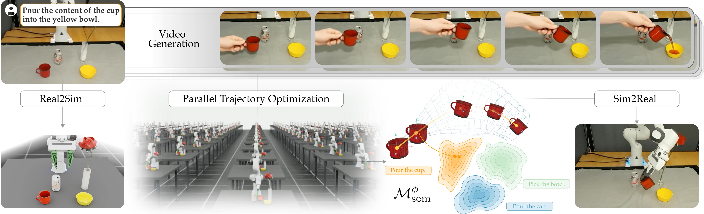

Prior research on learning from humans often requires real human demonstrations. But advances in video generation models offer a new paradigm: we can now prompt these generators to make synthetic videos of the task. On the plus side, these synthetic videos take place in the robot’s current environment and do not require actual human teaching. However, while the generated videos appear to show plausible motions, they lack both physical consistency and robot grounding, and thus the robot cannot directly roll out the trajectory shown by the video. In this paper, we seek to formalize the process of going from synthetic video generation to real-world robot trajectories for zero-shot manipulation tasks. We recognize that this problem is an instance of constrained optimization. The object trajectories extracted from the synthetic video provide an initial guess at the correct motion, and the robot must refine these trajectories (for instance, within a digital twin) while enforcing physical feasibility and semantic consistency. Our optimization-based formalism provides insights into the video generation properties necessary for success. Specifically, we show that the video generation must probabilistically seed the search within a semantic basin of attraction where the trajectory can be locally modified without losing its task alignment. Our analysis further reveals that state-of-the-art approaches can be viewed as instances of our unified formalism with key simplifications. In our experiments, we remove these simplifications to more closely match the underlying optimization, leading to more robust zero-shot trajectories from synthetic videos and improving average task success by 34.1% compared to the best-performing baseline.

Overview of CASTER. (Top Left) Given an initial RGB-D observation and a task prompt, we (Top) generate synthetic videos of a human performing that task in the current environment and (Bottom Left) build a digital twin of the scene. From the synthetic videos we extract the object trajectories, which then serve as initial guesses for trajectory optimization within the digital twin. (Bottom) The trajectories extracted from synthetic videos do not need to be perfect: instead, they must lie within a semantic basin of attraction where the optimization can locally modify the trajectory shape without removing its semantic meaning. (Bottom Right) We perform constrained optimization so that the robot’s actions in the digital twin cause the objects to move similarly to their video trajectories, while enforcing kinematic constraints so that the output can be directly executed by the real robot.